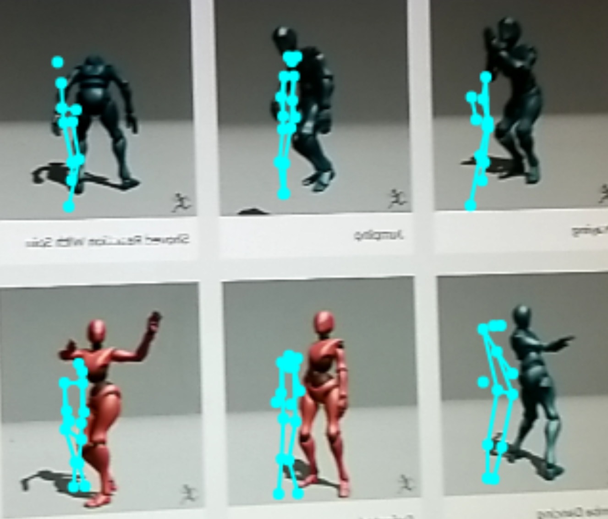

Tensorflowjs Posenet to BVH attempt
Posenet Camera for BVH conversion testing
My PoseNet Camera here
Saving Detector Draft
My Github here
A BVH player here
Mixamo OpenSource BVH files at https://www.mixamo.com/#/
The Posenet camera pointed at the Mixamo web page animated characters.

The problem is that the Posenet data is positional.
It calculates an x and y value for each pose location, with an accuracy score and a labelled body part.
Example Single Pose, single snapshot PoseNet data
However, the BVH data is mainly angular, based on the x, y, z angle of change from the main defined location of the hips.
The main BVH file once defined is then folowed by 57 values per time frame to describe the new angular location of each joint.
Only thje first three values are z,x,y position values for the entire character.
Example single object multiple time frames BVH file
I think the cosine law can be used to convert two sets of x y locations to angles, but that is where I am having some problems.
This is as far as I have got at the moment
BVH formater BVH formater here
This Github, ...
this Github Website Version, ...
this Hosted Website Version, ...
Tensorflowjs
By Jeremy Ellis
Twitter@rocksetta
Website http://rocksetta.com
Use at your own risk!